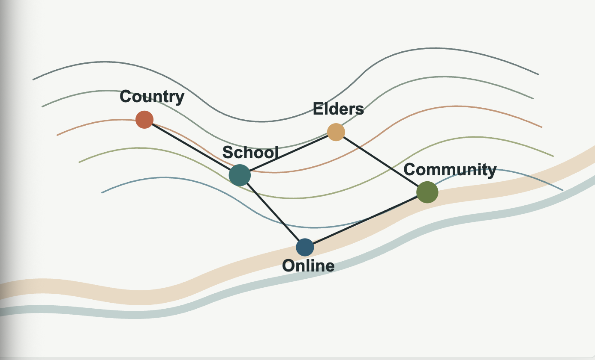

Existing Partner Ecosystem
- Miranda Project — legal and financial aid for women facing incarceration
- Corrective Services NSW — rehabilitation and post-release support
- Red Room Poetry — storytelling and diversionary programs
Dubbo, NSW · Mian School Pilot
Who are you visiting as?
Preventative · Cultural · Educational
A two-pronged cultural and educational program for First Nations youth at Mian School, Dubbo — combining in-person immersion with Elders and a lasting digital platform.

The Gap We Address
Australia has a well-developed ecosystem of post-incarceration support — reintegration services, legal aid, correctional programs. These are valuable. But they engage after a young person has already entered the justice system.
Structural, upstream, preventative work addressing the conditions that lead young people toward justice-system contact
The Causal Chain
Engagement with Country, Elders, language and Dreaming stories
Stronger sense of self, belonging and community
Reduced truancy, suspension and early dropout
Increased educational attainment and employment pathways
Lower rates of youth contact with the criminal justice system
Royal Commission, 1991
The most significant driver of Indigenous contact with the criminal justice system was their "disadvantaged and unequal position in wider society" — a condition shaped by colonisation and intergenerational trauma.
Royal Commission into Aboriginal Deaths in Custody, 1991 (via UNAA, 2021)
Pilot Site
Mian School is a behaviour school — a specialist educational setting for students with emotional, mental health or behavioural challenges that prevent productive engagement in mainstream classrooms. It holds a combination of characteristics that make it the right pilot site for this program.
Students at Mian are among the most at risk of early justice-system contact. They are disproportionately First Nations, largely rural, and have frequently already experienced school exclusion — one of the strongest predictors of incarceration.
The goal is to reach this cohort before harm deepens, building cultural anchors strong enough to support long-term school engagement and community belonging.
47% of youth in custody had been excluded from school. Suspension and expulsion are described by research as "ineffective practices" that "do not target the underlying cause of student misbehaviour" — yet remain widespread in behaviour school contexts.
of Mian School students identify as First Nations
Located in Dubbo, regional NSW — with limited access to cultural programming
Specialist behaviour school — students face high barriers to mainstream education
Program tracks one cohort from Year 7 through graduation — sustained, not one-off